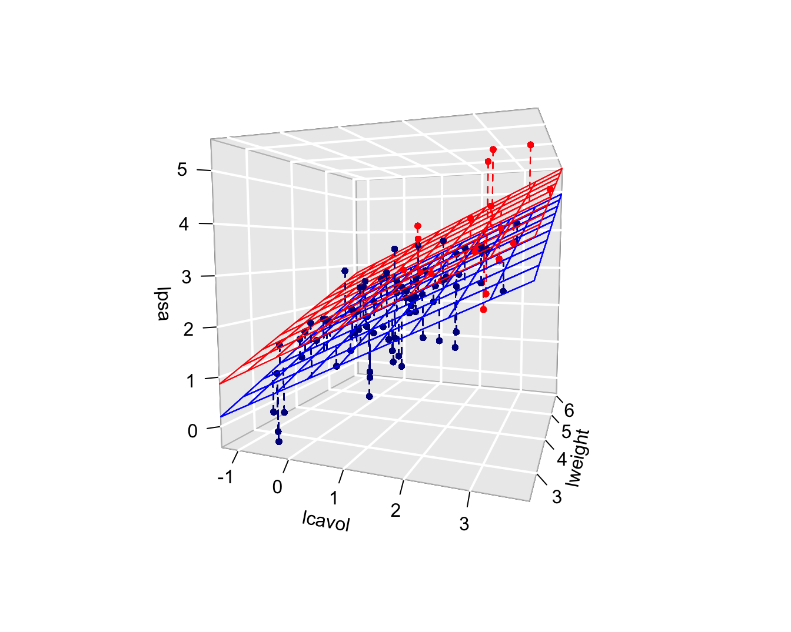

Inleiding
- Tot nu toe: één uitkomst \(Y\) en één predictor \(X\).
- Vaak handig om meerdere predictors te gebruiken om de respons te modelleren. bijv
- Associatie tussen X en Y verstoord door confounder: blootstelling aan asbest (X) op de longfunctie (Y ), is leeftijd (C).
- Welke van een groep variabelen beïnvloedt een gegeven uitkomst. Habitat en menselijke activiteit op biodiversiteit in het regenwoud. (grootte, ouderdom, hoogteligging van het woud \(\rightarrow\) bestudeer het simultane effect van die verschillende variabelen
- Voorspellen van uitkomst voor individuen: zoveel mogelijk predictieve informatie simultaan gebruiken. Verwante predicties (maar dan voor het risico op sterfte) worden dagdagelijks gebruikt in eenheden intensieve zorgen om de ernst van de gezondheidstoestand van een patiënt uit te drukken.
\(\rightarrow\) Uitbreiden van enkelvoudige lineaire regressie naar meerdere predictoren.
Prostaatkanker voorbeeld
prostate <- read_csv("https://raw.githubusercontent.com/statomics/sbc20/master/data/prostate.csv")
prostate
prostate$svi <- as.factor(prostate$svi)

Additief meervoudig lineaire regressie model
Afzonderlijke lineaire regressiemodellen, zoals
\[E(Y|X_v)=\beta_0 + \beta_v X_v\]
- Associatie tussen lpsa en 1 variabele vb (lcavol).
- Meer accurate predicties door meerdere predictoren simultaan in rekening te brengen
- Schatting voor parameter \(\beta_v\) mogelijks geen zuiver effect van tumor volume.
- \(\beta_v\) gemiddeld verschil in log-psa voor patiënten die 1 eenheid in het log tumor volume (lcavol) verschillen.
- Zelfs als lcavol niet is geassocieerd met het lpsa, dan nog kunnen patiënten met een groter tumor volume een hoger lpsa hebben omdat ze bijvoorbeeld een aantasting van de zaadblaasjes hebben (svi status 1). \(\rightarrow\) Confounding.
- Vergelijken van patiënten met zelfde svi status
- Kan eenvoudig via meervoudige lineaire regressiemodellen
Statistisch model
- \(p-1\) predictors \(X_1,...,X_{p-1}\) en uitkomst \(Y\) voor \(n\) subjecten
- bijvoorbeeld p-1=3: log kanker volume (\(X_v\)), log gewicht van de prostaat (\(X_w\)) en status van de zaadblaasjes (\(X_s\))
\[\begin{equation}
Y_i =\beta_0 + \beta_1 X_{i1} + ... +\beta_{p-1} X_{ip-1} + \epsilon_i
\end{equation}\] \[\begin{equation}
Y_i =\beta_0 + \beta_v X_{iv} +\beta_{w} X_{iw} \beta_{s}X_{is}+ \epsilon_i
\end{equation}\]
- \(\beta_0,\beta_1,...,\beta_{p-1}\) ongekende parameters
- \(\epsilon_i\) residuen die niet verklaard kunnen worden door de predictors
- Schatting met kleinste kwadraten techniek
Model staat toe om:
- de verwachte uitkomst te voorspellen voor subjecten gegeven hun waarden \(x_1,...,x_{p-1}\) voor de predictoren.
\[ E[Y\vert X_1=x_1, \ldots X_{p-1}=x_{p-1}]=\hat{\beta}_0+\hat{\beta}_1x_1+...+\hat{\beta}_{p-1}x_{p-1}\]
- Verschilt gemiddelde uitkomst tussen 2 groepen subjecten die \(\delta\) eenheden verschillen in een verklarende variabele \(X_j\) maar dezelfde waarden hebben voor alle andere variabelen \(\{X_k,k=1,...,p,k\ne j\}\).
\[
\begin{array}{l}
E(Y|X_v=x_v+\delta,X_w=x_w,X_{s}=x_{s}) \\
\quad\quad - E(Y|X_v=x_v,X_w=x_w,X_{s}=x_{s}) \\\\
\quad =\beta_0 + \beta_v (x_v +\delta) + \beta_w x_w+ \beta_{s} x_{s}\\
\quad\quad- \beta_0 - \beta_v x_v - \beta_wx_w-\beta_{s} x_{s} \\\\
\quad= \beta_v\delta
\end{array}
\]
Interpretatie \(\beta_v\):
- verschil in gemiddelde uitkomst tussen subjecten die in één eenheid van log tumor volume (\(X_v\)) verschillen, maar dezelfde waarde hebben voor de overige verklarende variabelen (\(X_w\) en \(X_s\)) in het model.
of
- Effect van predictor log tumor volume waarbij gecorrigeerd wordt voor de overige predictoren, hier dus associatie van tumor volume na correctie voor prostaatgewicht en svi-status.
Prostate voorbeeld
lmV <- lm(lpsa ~ lcavol, prostate)
summary(lmV)
Call:
lm(formula = lpsa ~ lcavol, data = prostate)
Residuals:
Min 1Q Median 3Q Max
-1.67624 -0.41648 0.09859 0.50709 1.89672
Coefficients:
Estimate Std. Error t value Pr(>|t|)
(Intercept) 1.50730 0.12194 12.36 <2e-16 ***
lcavol 0.71932 0.06819 10.55 <2e-16 ***
---
Signif. codes: 0 '***' 0.001 '**' 0.01 '*' 0.05 '.' 0.1 ' ' 1
Residual standard error: 0.7875 on 95 degrees of freedom
Multiple R-squared: 0.5394, Adjusted R-squared: 0.5346
F-statistic: 111.3 on 1 and 95 DF, p-value: < 2.2e-16
lmVWS <- lm(lpsa~lcavol + lweight + svi, prostate)
summary(lmVWS)
Call:
lm(formula = lpsa ~ lcavol + lweight + svi, data = prostate)
Residuals:
Min 1Q Median 3Q Max
-1.72966 -0.45767 0.02814 0.46404 1.57012
Coefficients:
Estimate Std. Error t value Pr(>|t|)
(Intercept) -0.26807 0.54350 -0.493 0.62301
lcavol 0.55164 0.07467 7.388 6.3e-11 ***
lweight 0.50854 0.15017 3.386 0.00104 **
sviinvasion 0.66616 0.20978 3.176 0.00203 **
---
Signif. codes: 0 '***' 0.001 '**' 0.01 '*' 0.05 '.' 0.1 ' ' 1
Residual standard error: 0.7168 on 93 degrees of freedom
Multiple R-squared: 0.6264, Adjusted R-squared: 0.6144
F-statistic: 51.99 on 3 and 93 DF, p-value: < 2.2e-16
Na terug transformatie
(Intercept) lcavol lweight sviinvasion
0.7648524 1.7360954 1.6628548 1.9467442

Besluitvorming in algemeen lineair regressiemodellen
Als gegevens representatief zijn dan zijn kleinste kwadraten schatters voor het intercept en de hellingen onvertekend. \[E[\hat \beta_j]=\beta_j,\quad j=0,\ldots,p-1.\]
Om resultaten uit de steekproef te kunnen veralgemenen naar de populatie is inzicht nodig in de verdeling van de parameterschatters.
Om dat op basis van slechts één steekproef te kunnen doen zijn bijkomende veronderstellingen nodig.
Lineariteit
Onafhankelijkheid
Homoscedasticiteit of gelijke variantie
Normaliteit: residuen \(\epsilon_i\) zijn normaal verdeeld
Onder deze aannames geldt: \[\epsilon_i \sim N(0,\sigma^2).\] en \[Y_i\sim N(\beta_0+\beta_1 X_{i1}+\ldots+\beta_{p-1} X_{ip-1},\sigma^2)\]
\[\hat\sigma^2=MSE=\frac{\sum\limits_{i=1}^n \left(y_i-\hat\beta_0-\hat\beta_1 X_{i1}-\ldots-\hat\beta_{p-1} X_{ip-1}\right)^2}{n-p}=\frac{\sum\limits_{i=1}^n e^2_i}{n-p}.\]
Opnieuw toetsen en betrouwbaarheidsintervallen via
\[T_k=\frac{\hat{\beta}_k-\beta_k}{SE(\hat{\beta}_k)} \text{ met } k=0, \ldots, p-1.\]
Als aan alle aannames is voldaan dan volgen deze statistieken \(T_k\) een t-verdeling met \(n-p\) vrijheidsgraden.
Wanneer niet is voldaan aan de veronderstelling van normaliteit maar wel aan lineariteit, onafhankelijkheid en homoscedasticiteit dan kunnen we voor inferentie opnieuw beroep doen op de centrale limietstelling die zegt dat de statistiek \(T_k\) bij benadering een standaard Normale verdeling zal volgen wanneer het aantal observaties voldoende groot is.
Voor het prostaatkanker voorbeeld kunnen we de effecten in de steekproef opnieuw veralgemenen naar de populatie toe door betrouwbaarheidsintervallen te bouwen voor de hellingen:
\[[\hat\beta_j - t_{n-p,\alpha/2} \text{SE}_{\hat\beta_j},\hat\beta_j + t_{n-p,\alpha/2} \text{SE}_{\hat\beta_j}]\].
2.5 % 97.5 %
(Intercept) -1.3473509 0.8112061
lcavol 0.4033628 0.6999144
lweight 0.2103288 0.8067430
sviinvasion 0.2495824 1.0827342
Formele hypothese testen: \[H_0: \beta_j=0\] \[H_1: \beta_j\neq0\]
met test statistiek \[T=\frac{\hat{\beta}_j-0}{SE(\hat{\beta}_j)}\] die een t-verdeling volgt met \(n-p\) vrijheidsgraden onder \(H_0\)
Call:
lm(formula = lpsa ~ lcavol + lweight + svi, data = prostate)
Residuals:
Min 1Q Median 3Q Max
-1.72966 -0.45767 0.02814 0.46404 1.57012
Coefficients:
Estimate Std. Error t value Pr(>|t|)
(Intercept) -0.26807 0.54350 -0.493 0.62301
lcavol 0.55164 0.07467 7.388 6.3e-11 ***
lweight 0.50854 0.15017 3.386 0.00104 **
sviinvasion 0.66616 0.20978 3.176 0.00203 **
---
Signif. codes: 0 '***' 0.001 '**' 0.01 '*' 0.05 '.' 0.1 ' ' 1
Residual standard error: 0.7168 on 93 degrees of freedom
Multiple R-squared: 0.6264, Adjusted R-squared: 0.6144
F-statistic: 51.99 on 3 and 93 DF, p-value: < 2.2e-16
Nagaan van modelveronderstellingen
Het niet-additieve meervoudig lineair regressiemodel
Interactie tussen een continue variabele en een factor variabele
- Het vorige model wordt het additief model genoemd omdat de bijdrage van het kanker volume in lpsa niet afhangt van de hoogte van het prostaat gewicht en de status van de zaadblaasjes.
- De helling voor lcavol hangt m.a.w. niet af van de hoogte van het log prostaat gewicht en de status van de zaadblaasjes.
\[
\begin{array}{l}
E[Y\vert X_v=x_v + \delta_v, X_w = x_w, X_S = x_s] - E[Y\vert X_v=x_v, X_w=x_w, X_s=x_s] = \\
\quad\quad \left[\beta_0 + \beta_v (x_{v}+\delta_v) + \beta_w x_{w} +\beta_s x_{s}\right] - \left[\beta_0 + \beta_v x_{v} + \beta_w x_{w} +\beta_s x_s\right] \\
\quad\quad = \beta_v \delta_v
\end{array}
\]
De svi status en de hoogte van het log-prostaatgewicht (\(x_w\)) heeft geen invloed op de bijdrage van het log-tumorvolume (\(x_v\)) in de gemiddelde log-prostaat antigeen concentratie en vice versa.
Het zou nu echter kunnen zijn dat de associatie tussen lpsa en lcavol wel afhangt van de status van de zaadblaasjes.
De gemiddelde toename in lpsa tussen patiënten die één eenheid van log-tumorvolume verschillen zou bijvoorbeeld lager kunnen zijn voor patiënten met aangetaste zaadblaasjes dan voor patienten met niet-aangetaste zaadblaasjes.
Het effect van het tumorvolume op de prostaat antigeen concentratie hangt in dit geval af van de status van de zaadblaasjes.
Om deze interactie of effectmodificatie tussen variabelen \(X_v\) en \(X_s\), en \(X_w\) en \(X_s\) statistisch te modelleren, kan men de producten van beide variabelen in kwestie aan het model toevoegen
\[
Y_i = \beta_0 + \beta_v x_{iv} + \beta_w x_{iw} +\beta_s x_{is} + \beta_{vs} x_{iv}x_{is} + \beta_{ws} x_{iw}x_{is} +\epsilon_i
\]
Deze termen kwantificeren de interactie-effecten van respectievelijk de predictoren \(x_v\) en \(x_s\), en, \(x_v\) en \(x_s\) op de gemiddelde uitkomst.
In dit model worden de termen \(\beta_vx_{iv}\), \(\beta_wx_{iw}\) en $sx{is} dikwijls de hoofdeffecten van de predictoren \(x_v\), \(x_w\) en \(x_s\) genoemd.
lmVWS_IntVS_WS <- lm(
lpsa ~
lcavol +
lweight +
svi +
svi:lcavol +
svi:lweight,
data = prostate)
summary(lmVWS_IntVS_WS)
Call:
lm(formula = lpsa ~ lcavol + lweight + svi + svi:lcavol + svi:lweight,
data = prostate)
Residuals:
Min 1Q Median 3Q Max
-1.50902 -0.44807 0.06455 0.45657 1.54354
Coefficients:
Estimate Std. Error t value Pr(>|t|)
(Intercept) -0.52642 0.56793 -0.927 0.356422
lcavol 0.54060 0.07821 6.912 6.38e-10 ***
lweight 0.58292 0.15699 3.713 0.000353 ***
sviinvasion 3.43653 1.93954 1.772 0.079771 .
lcavol:sviinvasion 0.13467 0.25550 0.527 0.599410
lweight:sviinvasion -0.82740 0.52224 -1.584 0.116592
---
Signif. codes: 0 '***' 0.001 '**' 0.01 '*' 0.05 '.' 0.1 ' ' 1
Residual standard error: 0.7147 on 91 degrees of freedom
Multiple R-squared: 0.6367, Adjusted R-squared: 0.6167
F-statistic: 31.89 on 5 and 91 DF, p-value: < 2.2e-16
Omdat \(X_S\) een dummy variabele is, verkrijgen we verschillende regressievlakken:
Model voor \(X_s=0\): \[Y=\beta_0+\beta_vX_v+\beta_wX_w + \epsilon\] waar de hoofdeffecten de hellingen voor lcavol en lweight zijn
en het model voor \(X_s=1\): \[\begin{array}{lcl}
Y&=&\beta_0+\beta_vX_v+\beta_s+\beta_wX_w+\beta_{vs}X_v + \beta_{ws}X_w +\epsilon\\
&=& (\beta_0+\beta_s)+(\beta_v+\beta_{vs})X_v+(\beta_w+\beta_{ws})X_w+\epsilon
\end{array}\] met intercept \(\beta_0+\beta_s\) en hellingen \(\beta_v+\beta_{vs}\) en \(\beta_w+\beta_{ws}\)
Interactie tussen twee continue variabelen
- Het zou nu echter kunnen zijn dat de associatie tussen lpsa en lcavol afhangt van het prostaatgewicht.
- De gemiddelde toename in lpsa tussen patiënten die één eenheid van log-tumorvolume verschillen zou bijvoorbeeld lager kunnen zijn voor patiënten met een hoog prostaatgewicht dan bij patiënten met een laag prostaatgewicht.
- Het effect van het tumorvolume op de prostaat antigeen concentratie hangt in dit geval af van het prostaatgewicht.
Om deze interactie of effectmodificatie tussen 2 variabelen \(X_v\) en \(X_w\) statistisch te modelleren, kan men het product van beide variabelen in kwestie aan het model toevoegen
\[
Y_i = \beta_0 + \beta_v x_{iv} + \beta_w x_{iw} +\beta_s x_{is} + \beta_{vw} x_{iv}x_{iw} +\epsilon_i
\]
Deze term kwantificeert het interactie-effect van de predictoren \(x_v\) en \(x_w\) op de gemiddelde uitkomst.
Het effect van een verschil in 1 eenheid in \(X_v\) op de gemiddelde uitkomst bedraagt nu:
\[
\begin{array}{l}
E(Y | X_v=x_v +1, X_w=x_w, X_s=x_s) - E(Y | X_v=x_v, X_w=x_w, X_s=x_s) \\
\quad = \left[\beta_0 + \beta_v (x_{v}+1) + \beta_w x_w +\beta_s x_{s} + \beta_{vw} (x_{v}+1) x_w \right] - \left[\beta_0 + \beta_v x_{v} + \beta_w x_w + \beta_s x_{s} + \beta_{vw} (x_{v}) x_w \right]\\
\quad = \beta_v + \beta_{vw} x_w
\end{array}
\]
lmVWS_IntVW <- lm(
lpsa ~ lcavol +
lweight +
svi +
lcavol:lweight,
prostate)
summary(lmVWS_IntVW)
Call:
lm(formula = lpsa ~ lcavol + lweight + svi + lcavol:lweight,
data = prostate)
Residuals:
Min 1Q Median 3Q Max
-1.65886 -0.44673 0.02082 0.50244 1.57457
Coefficients:
Estimate Std. Error t value Pr(>|t|)
(Intercept) -0.6430 0.7030 -0.915 0.36278
lcavol 1.0046 0.5427 1.851 0.06734 .
lweight 0.6146 0.1961 3.134 0.00232 **
sviinvasion 0.6859 0.2114 3.244 0.00164 **
lcavol:lweight -0.1246 0.1478 -0.843 0.40156
---
Signif. codes: 0 '***' 0.001 '**' 0.01 '*' 0.05 '.' 0.1 ' ' 1
Residual standard error: 0.7179 on 92 degrees of freedom
Multiple R-squared: 0.6293, Adjusted R-squared: 0.6132
F-statistic: 39.05 on 4 and 92 DF, p-value: < 2.2e-16
Merk op, dat het interactie effect dat geobserveerd wordt in de steekproef echter statistisch niet significant is (p=0.4).
Gezien de hoofdeffecten die betrokken zijn in een interactie term niet los van elkaar kunnen worden geïnterpreteerd is de conventie om een interactieterm uit het model te verwijderen wanneer die niet significant is.
Na verwijdering van de niet-significante interactieterm kunnen de hoofdeffecten worden geïnterpreteerd.
Interactie tussen twee factor variabelen
We gaan hier in het werkcollege dieper op in.
ANOVA Tabel
De totale kwadratensom SSTot is opnieuw
\[
\text{SSTot} = \sum_{i=1}^n (Y_i - \bar{Y})^2.
\]
Ook de residuele kwadratensom is zoals voorheen. \[
\text{SSE} = \sum_{i=1}^n (Y_i-\hat{Y}_i)^2.
\]
Dan geldt de volgende decompositie van de totale kwadratensom, \[
\text{SSTot} = \text{SSR} + \text{SSE} ,
\] met \[
\text{SSR} = \sum_{i=1}^n (\hat{Y}_i-\bar{Y})^2.
\]
Voor de vrijheidsgraden en de gemiddelde kwadratensommen geldt:
- SSTot heeft \(n-1\) vrijheidsgraden en \(\text{SSTot}/(n-1)\) is een schatter voor de variantie van \(Y\) (van de marginale distributie van \(Y\)).
- SSE heeft \(n-p\) vrijheidsgraden en \(\text{MSE}=\text{SSE}/(n-p)\) is een schatter voor de residuele variantie van \(Y\) gegeven de regressoren (i.e. een schatter voor de residuele variantie \(\sigma^2\) van de foutterm \(\epsilon\)).
- SSR heeft \(p-1\) vrijheidsgraden en \(\text{MSR}=\text{SSR}/(p-1)\) is de gemiddelde kwadratensom van de regressie.
De determinatiecoëfficiënt blijft zoals voorheen, i.e. \[
R^2 = 1-\frac{\text{SSE}}{\text{SSTot}} = \frac{\text{SSR}}{\text{SSTot}}
\] is de fractie van de totale variabiliteit in de uitkomsten die verklaard wordt door het regressiemodel.
De teststatistiek \(F=\text{MSR}/\text{MSE}\) is onder \(H_0:\beta_1=\ldots=\beta_{p-1}=0\) verdeeld als \(F_{p-1;n-p}\).
Call:
lm(formula = lpsa ~ lcavol + lweight + svi, data = prostate)
Residuals:
Min 1Q Median 3Q Max
-1.72966 -0.45767 0.02814 0.46404 1.57012
Coefficients:
Estimate Std. Error t value Pr(>|t|)
(Intercept) -0.26807 0.54350 -0.493 0.62301
lcavol 0.55164 0.07467 7.388 6.3e-11 ***
lweight 0.50854 0.15017 3.386 0.00104 **
sviinvasion 0.66616 0.20978 3.176 0.00203 **
---
Signif. codes: 0 '***' 0.001 '**' 0.01 '*' 0.05 '.' 0.1 ' ' 1
Residual standard error: 0.7168 on 93 degrees of freedom
Multiple R-squared: 0.6264, Adjusted R-squared: 0.6144
F-statistic: 51.99 on 3 and 93 DF, p-value: < 2.2e-16
Diagnostiek
Multicollineariteit
Call:
lm(formula = lpsa ~ lcavol + lweight + svi, data = prostate)
Residuals:
Min 1Q Median 3Q Max
-1.72966 -0.45767 0.02814 0.46404 1.57012
Coefficients:
Estimate Std. Error t value Pr(>|t|)
(Intercept) -0.26807 0.54350 -0.493 0.62301
lcavol 0.55164 0.07467 7.388 6.3e-11 ***
lweight 0.50854 0.15017 3.386 0.00104 **
sviinvasion 0.66616 0.20978 3.176 0.00203 **
---
Signif. codes: 0 '***' 0.001 '**' 0.01 '*' 0.05 '.' 0.1 ' ' 1
Residual standard error: 0.7168 on 93 degrees of freedom
Multiple R-squared: 0.6264, Adjusted R-squared: 0.6144
F-statistic: 51.99 on 3 and 93 DF, p-value: < 2.2e-16
Call:
lm(formula = lpsa ~ lcavol + lweight + svi + lcavol:lweight,
data = prostate)
Residuals:
Min 1Q Median 3Q Max
-1.65886 -0.44673 0.02082 0.50244 1.57457
Coefficients:
Estimate Std. Error t value Pr(>|t|)
(Intercept) -0.6430 0.7030 -0.915 0.36278
lcavol 1.0046 0.5427 1.851 0.06734 .
lweight 0.6146 0.1961 3.134 0.00232 **
sviinvasion 0.6859 0.2114 3.244 0.00164 **
lcavol:lweight -0.1246 0.1478 -0.843 0.40156
---
Signif. codes: 0 '***' 0.001 '**' 0.01 '*' 0.05 '.' 0.1 ' ' 1
Residual standard error: 0.7179 on 92 degrees of freedom
Multiple R-squared: 0.6293, Adjusted R-squared: 0.6132
F-statistic: 39.05 on 4 and 92 DF, p-value: < 2.2e-16
- Schattingen verschillend van additief model en standaardfouten zijn veel groter!
- De oorzaak is probleem van multicollineariteit.
- Als 2 predictoren sterk gecorreleerd zijn, dan delen ze voor een groot stuk dezelfde informatie
- Moeilijk om de afzonderlijke effecten van beiden op de uitkomst te schatten.
- Kleinste kwadratenschatters onstabiel wordt
- Standaard errors kunnen worden opgeblazen
- Zolang men enkel predicties tracht te bekomen op basis van het regressiemodel zonder daarbij te extrapoleren buiten het bereik van de predictoren is multicollineariteit geen probleem.
- Wel probleem voor inferentie
cor(cbind(prostate$lcavol,prostate$lweight,prostate$lcavol*prostate$lweight))
[,1] [,2] [,3]
[1,] 1.0000000 0.1941283 0.9893127
[2,] 0.1941283 1.0000000 0.2835608
[3,] 0.9893127 0.2835608 1.0000000
- hoge correlatie tussen log-tumorvolume en interactieterm.
- Is een gekend probleem voor hogere orde termen (interacties en kwadratische termen)
- Multicollineariteit opsporen a.d.h.v. correlatie matrix of scatterplot matrix is niet ideaal.
- Geen idee in welke mate de geobserveerde multicollineariteit de resultaten onstabiel maakt.
- In modellen met 3 of meerdere predictoren, zeg X1, X2, X3 kan er zware multicollineariteit optreden ondanks dat alle paarsgewijze correlaties tussen de predictoren laag zijn.
- Ook multicollineariteit als er een hoge correlatie is tussen X1 en een lineaire combinatie van X2 en X3.
Variance inflation factor (VIF)
Voor de \(j\)-de parameter in het regressiemodel gedefinieerd wordt als \[\textrm{VIF}_j=\left(1-R_j^2\right)^{-1}\]
- In deze uitdrukking stelt \(R_j^2\) de meervoudige determinatiecoëfficiënt voor van een lineaire regressie van de \(j\)-de predictor op alle andere predictoren in het model.
- VIF is 1 als \(j\)-de predictor niet lineair geassocieerd is met de andere predictoren in het model.
- VIF is groter dan 1 in alle andere gevallen.
- VIF is factor waarmee geobserveerde variantie groter is dan wanneer alle predictoren onafhankelijk zouden zijn.
- VIF > 10 \(\rightarrow\) ernstige multicollineariteit.
Body fat voorbeeld
Call:
lm(formula = Body_fat ~ Triceps + Thigh + Midarm, data = bodyfat)
Residuals:
Min 1Q Median 3Q Max
-3.7263 -1.6111 0.3923 1.4656 4.1277
Coefficients:
Estimate Std. Error t value Pr(>|t|)
(Intercept) 117.085 99.782 1.173 0.258
Triceps 4.334 3.016 1.437 0.170
Thigh -2.857 2.582 -1.106 0.285
Midarm -2.186 1.595 -1.370 0.190
Residual standard error: 2.48 on 16 degrees of freedom
Multiple R-squared: 0.8014, Adjusted R-squared: 0.7641
F-statistic: 21.52 on 3 and 16 DF, p-value: 7.343e-06
Triceps Thigh Midarm
708.8429 564.3434 104.6060
Call:
lm(formula = Midarm ~ Triceps + Thigh, data = bodyfat)
Residuals:
Min 1Q Median 3Q Max
-0.58200 -0.30625 0.02592 0.29526 0.56102
Coefficients:
Estimate Std. Error t value Pr(>|t|)
(Intercept) 62.33083 1.23934 50.29 <2e-16 ***
Triceps 1.88089 0.04498 41.82 <2e-16 ***
Thigh -1.60850 0.04316 -37.26 <2e-16 ***
---
Signif. codes: 0 '***' 0.001 '**' 0.01 '*' 0.05 '.' 0.1 ' ' 1
Residual standard error: 0.377 on 17 degrees of freedom
Multiple R-squared: 0.9904, Adjusted R-squared: 0.9893
F-statistic: 880.7 on 2 and 17 DF, p-value: < 2.2e-16
We evalueren nu de VIF in het prostaatkanker voorbeeld voor het additieve model en het model met interactie.
lcavol lweight svi
1.447048 1.039188 1.409189
lcavol lweight svi lcavol:lweight
76.193815 1.767121 1.426646 80.611657
- Inflatie voor interactietermen wordt vaak veroorzaakt door het feit dat het hoofdeffect een andere interpretatie krijgt.
Invloedrijke Observaties
- Het is niet wenselijk dat een enkele waarneming het resultaat van een lineaire regressieanalyse grotendeels bepaald
- Diagnostieken die ons toelaten om extreme observaties op te sporen
- Studentized residu’s om outliers op te sporen
- leverage (invloed, hefboom) om observaties met extreem covariaatpatroon op te sporen
Cook’s distance
- Een meer rechtstreekse maat om de invloed van elke observatie op de regressie-analyse uit te drukken
- Cook’s distance voor \(i\)-de observatie is een diagnostische maat voor de invloed van die observatie op alle predicties of voor haar invloed op alle geschatte parameters. \[D_i=\frac{\sum_{j=1}^n(\hat{Y}_j-\hat{Y}_{j(i)})^2}{p\textrm{MSE}}\]
- Als Cook’s distance \(D_i\) groot is, dan heeft de \(i\)-de observatie een grote invloed op de predicties en geschatte parameters.
- Extreme Cook’s distance als het het 50% percentiel van de \(F_{p,n-p}\)-verdeling overschrijdt.
- Eenmaal men vastgesteld heeft dat een observatie invloedrijk is, kan men zogenaamde DFBETAS gebruiken om te bepalen op welke parameter(s) ze een grote invloed uitoefent.
- DFBETAS van de \(i\)-de observatie vormen een diagnostische maat voor de invloed van die observatie op elke regressieparameter afzonderlijk \[\textrm{DFBETAS}_{j(i)}=\frac{\hat{\beta}_{j}-\hat{\beta}_{j(i)}}{\textrm{SD}(\hat{\beta}_{j})}\]
- DFBETAS extreem is wanneer ze 1 overschrijdt in kleine tot middelgrote datasets en \(2/\sqrt{n}\) in grote datasets

Constrasten
- Bij meer complexe algemene lineaire modellen wenst men dikwijls meerdere hypothesen te toetsen.
- Bovendien vertalen de onderzoekshypotheses zich hierbij niet steeds in één parameter, maar in een lineaire combinatie van modelparameters.
- Een lineaire combinatie van modelparameters wordt ook een contrast genoemd.
NHANES voorbeeld
Stel dat de onderzoekers de associatie tussen de leeftijd en de bloeddruk wensen te bestuderen. Mogelijks is die associatie anders is bij mannen dan vrouwen.
De onderzoekers wensen de volgende onderzoeksvragen te beantwoorden:
- Is er een associatie tussen leeftijd en de bloeddruk bij vrouwen?
- Is er een associatie tussen leeftijd en de bloeddruk bij mannen?
- Is de associatie tussen leeftijd en de bloeddruk verschillend bij mannen dan bij vrouwen?
Model
We fitten een model op basis van de gemiddelde systolische bloeddruk (BPSysAve) in functie van de leeftijd, geslacht en een interactie tussen leeftijd en geslacht voor volwassen blanke subjecten uit de NHANES studie.
library(NHANES)
bpData <- NHANES %>%
filter(
Race1 =="White" &
Age >= 18 &
!is.na(BPSysAve)
)
mBp1 <- lm(BPSysAve ~ Age*Gender, bpData)
par(mfrow = c(2,2))
plot(mBp1)
Remediëren voor heteroscedasticiteit
- Als de plot van de residuen i.f.v. de geschatte waarden een toetervorm vertoont kan men toch correcte inferentie bekomen voor grote steekproeven als men de variantie van de response kan schatten.
- De inverse variantie voor elke observatie kan dan als gewicht worden gebruikt in de lm functie.
- We zullen daarom de standard deviatie modelleren in functie van het gemiddelde.
- Dat kan door de absolute waarde van de residuen te modelleren in functie van de gefitte waarden.
- We kunnen de variantie van Y schatten voor elke observatie d.m.v de kwadraten van de predicties voor alle data punten a.d.h.v model voor de standard deviatie.
- De inferentie blijft asymptotisch geldig.
mSd <- lm(mBp1$res %>% abs ~ mBp2$fitted)
We schatten het model nu opnieuw:
mBp3 <- lm(BPSysAve ~ Age*Gender, bpData, w = 1/mSd$fitted^2)
De residuen vertonen nog steeds heteroscedasticiteit.
data.frame(residuals = mBp3$residuals, fit = mBp3$fitted) %>%
ggplot(aes(fit,residuals)) +
geom_point()
Na het herschalen van de residuen a.d.h.v. de standard deviatie (vermenigvuldigen met vierkantswortel van het gewicht) zijn de geschaalde residuen homoscedastisch.
De parameters worden geschat door de gewogen kleinste kwadraten techniek.
\[ SSE = \sum\limits_{i=1}^n w_i e_i^2\]
met \(w_i = 1/\hat \sigma^2_i\).
De gewogen regressie zal dus correct rekening houden met heteroscedasticiteit.
data.frame(scaled_residuals = mBp3$residuals/mSd$fitted, fit = mBp3$fitted) %>%
ggplot(aes(fit,scaled_residuals)) +
geom_point()
Besluitvorming
Call:
lm(formula = BPSysAve ~ Age * Gender, data = bpData, weights = 1/mSd$fitted^2)
Weighted Residuals:
Min 1Q Median 3Q Max
-4.3642 -0.8494 -0.0940 0.7605 6.5701
Coefficients:
Estimate Std. Error t value Pr(>|t|)
(Intercept) 97.59709 0.63501 153.693 < 2e-16 ***
Age 0.44082 0.01505 29.294 < 2e-16 ***
Gendermale 13.36724 1.09017 12.262 < 2e-16 ***
Age:Gendermale -0.19115 0.02420 -7.899 3.45e-15 ***
---
Signif. codes: 0 '***' 0.001 '**' 0.01 '*' 0.05 '.' 0.1 ' ' 1
Residual standard error: 1.319 on 4828 degrees of freedom
Multiple R-squared: 0.2182, Adjusted R-squared: 0.2178
F-statistic: 449.3 on 3 and 4828 DF, p-value: < 2.2e-16
De onderzoeksvragen vertalen zich in de volgende nullhypotheses:
Associatie tussen bloeddruk en leeftijd bij de vrouwen? \[H_0: \beta_\text{Age} = 0 \text{ vs } H_1: \beta_\text{Age} \neq 0 \]
Associatie tussen bloeddruk en leeftijd bij de mannen? \[H_0: \beta_\text{Age} + \beta_\text{Age:Gendermale} = 0 \text{ vs } H_1: \beta_\text{Age} + \beta_\text{Age:Gendermale} \neq 0 \]
Is de Associatie tussen bloeddruk en leeftijd verschillend bij mannen en vrouwen? \[H_0: \beta_\text{Age:Gendermale} = 0 \text{ vs } H_1: \beta_\text{Age:Gendermale} \neq 0 \]
- We kunnen onderzoeksvraag 1 en 3 onmiddelijk toetsen o.b.v. de model output.
- Onderzoeksvraag 2 is echter een lineaire combinatie van twee parameters.
- Bovendien is er ook het probleem dat we meerdere toetsen nodig hebben om de associatie te bestuderen.
We kunnen opnieuw gebruik maken van een Anova approach.
- We toetsen eerste de omnibus hypothese dat er geen associatie is tussen leeftijd en de bloeddruk.
\[ H_0: \beta_\text{Age} = \beta_\text{Age} + \beta_\text{Age:Gendermale} = \beta_\text{Age:Gendermale} = 0
\]
- Dat vereenvoudigt zich tot het toetsen dat
\[ H_0: \beta_\text{Age} = \beta_\text{Age:Gendermale} = 0
\]
- Wat we kunnen evalueren door twee modellen te vergelijken. Een model met enkel het gender effect en volledige model met Gender, Age en Gender x Age interactie.
- Als we deze hypothese kunnen verwerpen voeren we posthoc analyses uit voor elk van de 3 contrasten.
Omnibus test
mBp0 <- lm(BPSysAve ~ Gender, bpData, w = 1/mSd$fitted^2)
anova(mBp0, mBp3)
Posthoc testen
De posthoc testen kunnen we opnieuw uitvoeren a.d.h.v. het multcomp pakket.
library(multcomp)
bpPosthoc <- glht(mBp3, linfct=c(
"Age = 0",
"Age + Age:Gendermale = 0",
"Age:Gendermale = 0")
)
bpPosthoc %>% summary
Simultaneous Tests for General Linear Hypotheses
Fit: lm(formula = BPSysAve ~ Age * Gender, data = bpData, weights = 1/mSd$fitted^2)
Linear Hypotheses:
Estimate Std. Error t value Pr(>|t|)
Age == 0 0.44082 0.01505 29.294 <1e-10 ***
Age + Age:Gendermale == 0 0.24967 0.01895 13.175 <1e-10 ***
Age:Gendermale == 0 -0.19115 0.02420 -7.899 <1e-10 ***
---
Signif. codes: 0 '***' 0.001 '**' 0.01 '*' 0.05 '.' 0.1 ' ' 1
(Adjusted p values reported -- single-step method)
bpPosthocBI <- bpPosthoc %>% confint
bpPosthocBI
Simultaneous Confidence Intervals
Fit: lm(formula = BPSysAve ~ Age * Gender, data = bpData, weights = 1/mSd$fitted^2)
Quantile = 2.3154
95% family-wise confidence level
Linear Hypotheses:
Estimate lwr upr
Age == 0 0.4408 0.4060 0.4757
Age + Age:Gendermale == 0 0.2497 0.2058 0.2936
Age:Gendermale == 0 -0.1911 -0.2472 -0.1351
Merk op dat de glht functie ons toelaat om de contrasten te definiëren door de nulhypotheses expliciet te formuleren in een karaktervector waarbij gebruik wordt gemaakt van de naam van de pararameters in het model.
Conclusie
We kunnen besluiten dat er een extreem significante associatie is tussen leeftijd en de bloeddruk (p << 0.001). De bloeddruk bij twee vrouwen die in leeftijd verschillen is gemiddeld 0.44 mm Hg hoger per jaar leeftijdsverschil bij de oudste vrouw en dat verschil is extreem significant (p << 0.001, 95% BI [0.41, 0.48]. De bloeddruk bij mannen die in leeftijd verschillen is gemiddeld 0.25 mm Hg hoger per jaar leeftijdsverschil bij de oudere man. (p << 0.001, 95% BI [0.21, 0.29]. Het gemiddelde bloeddrukverschil tussen personen in leeftijd verschillen is gemiddeld -0.19 mm Hg/jaar hoger bij vrouwen dan mannen (p << 0.001, 95% BI [-0.25, -0.14]).
